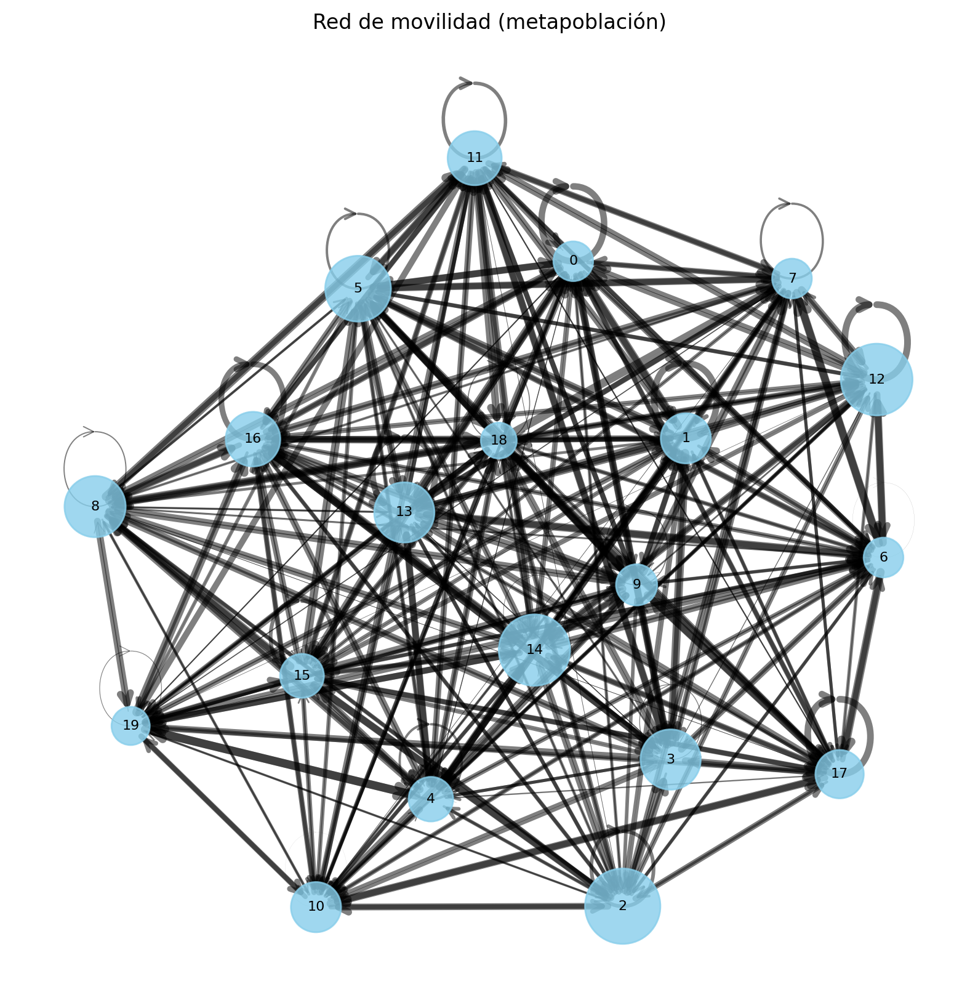
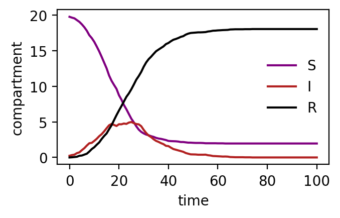

Starting Simulation ...
Simulation completed
Time: 0min 1.79s2026-05-05
This notebook runs a basic parametrization of the model.
We simulate an SIR epidemic in a system of M subpopulations.
En este bloque generamos un ejemplo sintético de una metapoblación.
Número de subpoblaciones: M = 20
Define cuántas regiones (nodos) tendrá el sistema.
Matriz de movilidad: mobility = np.random.rand(M, M)
Se crea una matriz \(M \times M\) con valores aleatorios en ([0,1]), donde cada entrada:
$(j, i) $
representa la intensidad del flujo de personas desde la región \(i\) hacia la región \(j\).
En este ejemplo, la movilidad es completamente aleatoria (no basada en datos reales).
Tamaños de las subpoblaciones: subpopulation_sizes = np.random.randint(20, 100, M)
Se asigna a cada región un tamaño poblacional entero aleatorio entre 20 y 100.
Este bloque construye la estructura básica sobre la que se simulará la dinámica epidémica.
En este bloque construimos y visualizamos una red dirigida que representa la metapoblación:
El grafo se construye con networkx a partir de la matriz de movilidad, donde cada entrada ( (i, j) ) indica el flujo desde la región (i) hacia la región (j).
Para facilitar la interpretación visual: - Se utiliza un layout tipo spring para distribuir los nodos en el espacio. - Los pesos de las aristas se normalizan para escalar su grosor. - Opcionalmente, se puede aplicar un umbral para mostrar solo las conexiones más relevantes.
Esta visualización ayuda a entender cómo la estructura de movilidad conecta las subpoblaciones y condiciona la propagación de la epidemia.

En este bloque definimos los parámetros del modelo SIR y las condiciones iniciales de la simulación.
Tasa de infección: beta = 0.375
Controla la probabilidad de transmisión por contacto.
Tasa de recuperación: mu = 1/8
Representa la fracción de individuos infectados que se recuperan por unidad de tiempo (en este caso, un tiempo medio de infección de 8 días).
Número reproductivo básico: R0 = beta / mu
Indica el número medio de infecciones secundarias generadas por un individuo infectado en una población completamente susceptible.
Número inicial de infectados: initial_infected = 10
Cantidad de individuos con los que comienza la epidemia.
Región de inicio: outbreak_source = 9
Índice de la subpoblación donde se introduce la infección (también puede ser 'random').
Tiempo total de simulación: T_max = 100
Duración total del experimento in silico.
Se crea una instancia del modelo SIRModel utilizando:
mobility)subpopulation_sizes)Además:
dt controla el paso de tiempo de la simulacióndt_save define cada cuánto se guardan los resultadosVERBOSE=True permite seguir el progreso de la simulaciónFinalmente, se ejecuta la simulación con:
model.run_simulation()Este bloque define completamente el experimento:
👉 A partir de aquí, el modelo evoluciona dinámicamente la epidemia en la red de subpoblaciones.
Starting Simulation ...
Simulation completed
Time: 0min 1.79s
Representa el número de individuos infectados a lo largo del tiempo para cada región.
Preguntas:
Convierte la salida de la simulación en un objeto xarray.Dataset.
Sugerencias:
time, regionS, I, RPreguntas:
Modifica la región inicial donde comienza la infección.
Preguntas:
Modifica la región inicial donde comienza la infección.
Preguntas:
Calcula el tiempo en el que cada región alcanza su pico de infectados.
Preguntas:
Analiza qué regiones:
Hipótesis:
¿Se confirma en la simulación?
Analiza qué regiones:
Hipótesis:
¿Se confirma en la simulación?
Reduce la movilidad entre regiones.
Preguntas:
Modifica ligeramente el parámetro beta.
Preguntas:
Simula el modelo para distintos valores de beta.
Representa:
Preguntas: